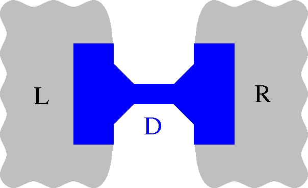
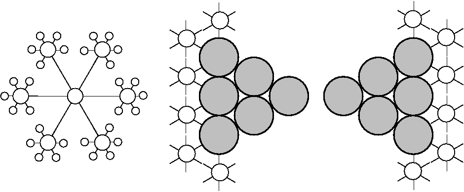

Atomistic NanoTransport
Overview
ANT.Gaussian09 and ANT.Gaussian16
ANT combines Gaussian electronic-structure calculations with Landauer and non-equilibrium Green’s function methods to study electron transport through atomically defined junctions. Both interfaces follow the same physical division: a central scattering region and explicit electrode atoms are described with a quantum-chemical Hamiltonian, while semi-infinite electrodes enter through model self-energies. The resulting open-system density is used in a self-consistent electronic-structure calculation.
The two codes differ in how ANT communicates with Gaussian and controls the calculation. ANT.Gaussian09 is integrated into modified Gaussian09 executables; ANT.Gaussian16 uses a Python driver, GauOpen and the PyANT Fortran extension.
| ANT.Gaussian09 | ANT.Gaussian16 | |
|---|---|---|
| Interface | ANT is linked into Gaussian09’s modified L502; a modified L101 reads the job name. | ANT-Gau-Open drives Gaussian16 through GauOpen and calls ANT through the PyANT extension. |
| Installation | Requires a source-built Gaussian09 and compatible Fortran toolchain to prepare and link the modified executables. | Requires Gaussian16, GauOpen, a supported Python environment and a compiled PyANT extension. |
| Running a calculation | Run Gaussian with the ANT executables selected using the input’s %Subst directives. | Run ant-gau-open INPUT_FILE [OPTIONS], optionally through poetry run. |
| SCF control | The modified Gaussian SCF calls ANT to replace the density matrix after pre-convergence. | The Python driver orchestrates Gaussian Fock-matrix updates, ANT density calculations and density mixing. |
| Input and controls | Gaussian geometry/basis input plus the job’s ANT parameter file. | Gaussian input and ANT parameters, with additional command-line controls for the model, mixing, convergence, Gaussian cores and memory. |
| Restart workflow | Uses ANT saved-density files and the restart controls described below. | The Python interface includes restart handling through Gaussian binary archive files. |
| Availability | Public repository, GPL-3.0. | Prototype, proprietary, private repository available to authorised users. |
Install ANT.Gaussian09 → · Install ANT.Gaussian16 and view command-line options →
Transport workflow
- Prepare the junction geometry, basis and electrode model, and obtain an initial electronic density with Gaussian.
- Connect the model electrodes and calculate the open-system density with ANT.
- Update the electronic Hamiltonian with Gaussian and iterate the density until convergence.
- Evaluate transmission, densities of states and the analyses supported by the selected implementation.


Features and implementation details
The physical framework is shared, but the two repositories are developed separately. The detailed features, keyword defaults and output filenames below describe the current ANT.Gaussian09 implementation (3.3.0); they should not be taken as a guarantee that every feature is implemented identically in the PyANT version supplied with ANT.Gaussian16. For Gaussian16-specific execution and SCF options, use its command-line reference.
How a calculation proceeds:
- GAUSSIAN starts its usual SCF for the cluster. When its density convergence reaches SL, ANT connects the electrodes and takes over the density matrix in every following cycle.
- In each cycle ANT finds the device Fermi level that gives the right number of electrons, integrates the Green's function to build the density matrix, and mixes it with previous cycles (ALPHA, NPULAY, or Fock-matrix mixing with FMIXING).
- After convergence, ANT evaluates transmission, densities of states and population analyses on a real energy grid (EW1/EW2, ESTEP).
- The converged density matrix is saved as P.job_name.dat, or as the smaller, full-precision binary P.job_name.bin (PBINARY), and is read automatically to restart a calculation, for example to ramp the bias or to start a new spin configuration (PFIX, NFIX).
Electrode models (TYPE1/TYPE2):
- BETHE: a parametrized Bethe lattice attached to the outer electrode atoms, with tight-binding parameter sets for many elements in BLDAT (BLPAR1/BLPAR2, NEMBED1/NEMBED2, GLUE).
- 1DLEAD: periodic one-dimensional leads built from the Hamiltonian and overlap of repeated units in the cluster itself (NATPC1/NATPC2). Their Fermi levels come from periodic band filling and their self-energies from an iterative Dyson solution (SELFACC, L1DALPHA).
- GHOST: no electrode on that side; two GHOST electrodes give an isolated cluster treated with ANT's own convergence controls.
Basic functionality:
- Spin-resolved transmission T(E) in equilibrium or at finite bias, at zero temperature (T.job_name.dat, or T.job_name.SOC.dat with spin-orbit coupling or spin rotation), with the spin polarization of the current and its four spin components in spinor calculations (POL, TCOMP), and the full spin polarization vector (Px, Py, Pz) in one run (FULLPOL).
- Eigenchannel decomposition of the transmission (NCHANNELS, HTRANSM) and reduced transmission matrix between selected atoms (t.job_name.dat, RTM_BEG/RTM_END).
- Total density of states and DOS projected on selected atoms and orbitals (DOS.job_name.dat, LDOS, LDOS_BEG/LDOS_END, DOSENERGY), and bulk DOS of the electrodes (Lead1DOS.dat, Lead2DOS.dat, LEADDOS).
- Mulliken charge and spin population analysis (Q.job_name.dat, MULLIKEN) and average on-site energies of the atoms (V.job_name.dat, keyword HAMILTON), useful to follow the potential drop at finite bias.
- Finite bias voltage with a self-consistent non-equilibrium density (BIASVOLT) and gating through an excess charge (QEXCESS).
Numerical methods:
- Density matrix from a complex-contour integration of the Green's function, plus a real-axis integration over the bias window at finite bias. The default Gauss-Chebyshev quadrature is controlled by PACC and a maximum number of points; the experimental adaptive Gauss-Kronrod quadrature (ADAPTQUAD) checks every density-matrix element.
- Integration bounds EMin/EMax are verified by a spectral-weight check whose tolerance follows CHARGEACC.
- Device Fermi search by Muller, secant and bisection, or by safeguarded Brent with an enforced charge residual (DEVMULLER/DEVBRENT, FERMIACC, CHARGEACC). An upper bound on the Fermi energy (EFMAX) and a diagnostic scan of the charge around a rejected root (QSCAN) are available. Bethe-lattice Fermi levels use Brent by default (BLBRENT/BLSECANT).
- ETA broadens every device state, including states that do not couple to the electrodes, so that such levels can be partially occupied.
- Tolerances are relaxed in early SCF cycles and tightened as the calculation converges, unless FULLACC keeps them at their input values from the start.
- OpenMP parallelization of the energy integrations (set %NProcShared and OMP_NUM_THREADS to the same value).
- Progress messages in the log mark each stage, for example the start of every density-matrix integration and Fermi search.
Advanced features:
- Spin manipulation directives to build self-consistent solutions with tailored spin textures: reversing the magnetization from a given atom (MRSTART), editing or deleting atomic spins (SPINEDIT, SPINDEL), magnetic boundary conditions of the electrodes (UD/DU/DD), fixed electron numbers (NALPHA/NBETA) and spin locking during the first cycles (NSPINLOCK).
- Spin-orbit coupling after self-consistency (SOC) or within the SCF cycle (SCFSOC), with scaling factors and values per shell and per atom (SOC_FAC_P/D/F, SOCFACATOM, SOC_VAL_P/D/F, SOCVALATOM). Calibrated SOC factors with their basis sets and pseudopotentials for Au, Ag, Pt, W, Pb, Bi, Sb, Al and Cu: SOC_database.pdf.
- Rotation of the spin quantization axis of selected atoms after self-consistency, without relaxing the rotated spins (SPINROTATOM; for a self-consistent spin flip use SPINEDIT), and Zeeman fields applied to the whole device or to selected atoms (ZM, BX, BY, BZ, ZMATOM).
- Correlation effects: DFT+U (DFT+U) and the interface to Dynamical Mean Field Theory through correlated blocks and hybridization functions (CORRBLOCKS, HYBFUNC, PORTHO, DIAGCORRBL).
Worked examples (Al, Au, Ni, Pt and other nanocontacts, molecules and graphene) are distributed in the examples directory; see also the Manual and the Examples page.
Implementation and parallelism
The ANT transport engine is written in Fortran. ANT.Gaussian09 supplies Intel and NVIDIA/PGI build configurations and uses OpenMP in its numerical work. ANT.Gaussian16 wraps a Fortran engine as PyANT and provides optional OpenMP support at build time. Compiler requirements and parallel settings depend on the interface; follow the corresponding installation guide.
Developers and contributors
Current developers- J. J. Palacios, Dpto. de Fisica de la Materia Condensada and Condensed Matter Physics Institute (IFIMAC), Universidad Autonoma de Madrid, Madrid 28049, Spain.
- D. Jacob, Theory Department, Max-Planck-Institute for Microstructure Physics, Halle, 06120 (GERMANY).
- M. Soriano, Institut de la Matiére Condensée et des Nanosciences (IMCN), Nanoscopic Physics (NAPS), Université Catholique de Louvain (UCL), Belgium.
- C. Salgado, Dpto. de Fisica de la Materia Condensada, Universidad Autonoma de Madrid, Madrid 28049, Spain.
- W. Dednam, Dept. of Physics, University of South Africa, Johannesburg 1710, South Africa.
- A. J. Perez-Jimenez, Dpto. de Quimica-Fisica, Universidad de Alicante, Spain.
- E. Louis, Dpto. de Fisica Aplicada, Universida de Alicante, Spain.
- E. SanFabian, Dpto. de Quimica-Fisica, Universidad de Alicante, Spain.
- J. A. Verges, Dpto. de Fisica Teorica de la Materia Condensada, Instituto de Ciencia de Materiales de Madrid, CSIC, Spain.
-
Former developers
Distribution and contact
- 1- Contact SIMUNE Atomistics
- 2- Contact Juan
Jose
Palacios
Departamento de Fisica de la Materia Condensada
Facultad de Ciencias
Universidad Autonoma de Madrid, E-28049, Spain
juanjose.palacios@uam.es